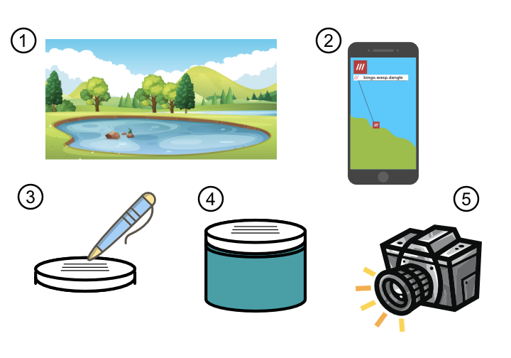
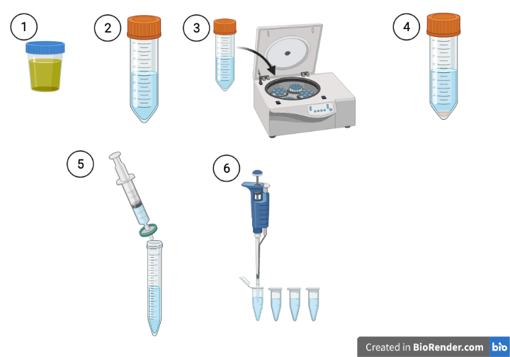
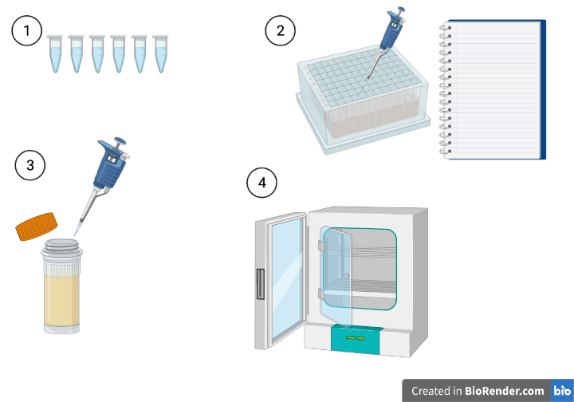
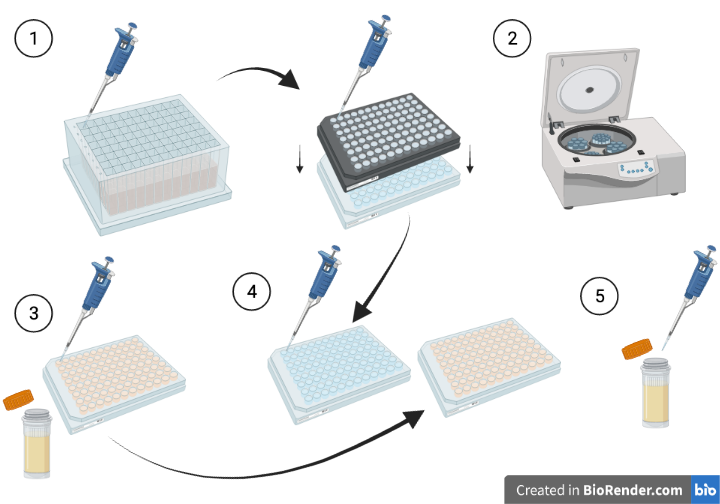
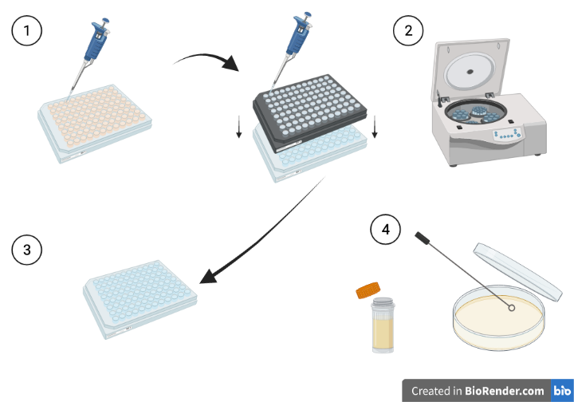

Week 1 Phage Enrichment
1.1 Monday 17th May
There will be a 1-hour presentation introducing you to the project. This will be held at 9:35 am in LSI Seminar Room A. You will also be provided with a sampling kit containing three jars. The aim is for each student to collect three samples of freshwater. One of these should be from one of the ponds on campus. Try not to all sample the same pond! The other two can be from other sources near your homes or around Exeter. They can include ponds, rivers, bird baths, puddles etc. Each sample will need to be at least 25 mL (each jar holds 40 mL).
When picking your sample site, it is worth noting that following heavy rainfall, many wastewater treatment plants have storm overflows that feed into rivers and streams. This makes these regions excellent hunting grounds for new phages. There is a resource for finding such areas (in the interests of water safety) here. If we have rainfall just before sampling, it might be worth considering sites found on this map in the local region.

At each sample site,
- Step 1: Find an interesting sampling site
- Step 2: Record the location using the What3Words app on your phone.This will be used as the name of the sample.
- Step 3: Write the three words on the lid of the jar using the waterproof lab pen in your kit, as well as the sample date.
- Step 4: Fill the jar with water and make sure the lid is tightly fastened.
- Step 5: Take a photo of the sample site to remind you of what it was you sampled.
When you get home, keep the samples in your fridge overnight.
Record the details of your sample on the Sample tab on the Google sheet here. Make sure you provide the What3Words address, the date and a brief description of the sample, as well as your name. You do not need to supply a sample number - these will be assigned once all samples are collected.
If you want to register your samples as part of the Citizen Phage Library project, you can also register them on the CPL portal. This is currently hosted at the university, so you’ll need to be on the VPN or on University campus.
- Make sure you are either on campus or on the University VPN
- Go to this site
- Click on ‘Sign In’
- Click on ‘Sign Up’
- Enter a username, email address and choose a password
- A confirmation email will be sent to your email address - click on the link it contains to complete registration and it should take you to your account page.
- You need to register your sampling kit before you register samples, so select the ‘Order or register a sampling kit’ button.
- Find your Sample Kit ID on the side of your sampling kit and type it in (e.g. K-00001)
- Click submit - this registers that kit ID with your account.
- For each sample, click on ‘Register your samples’.
- Enter the What3Words address, the date taken and give a description of the sample. Choose the sample picture for uploading. Your registered Sample Kit should be selected by default.
- Press Submit.
1.2 Tuesday 18th May
The aim of this session is to prepare your samples for phage hunting. This involves removing solid debris and bacteria by centrifugation and filtering, leaving only the phages (which are smaller than the filter size) in the filtrate. Each sample will be aliquoted into 15 aliquots (one per student).
At the end, you should have three lots of 15 1.5 mL microcentrifuge tubes. These will then be distributed between the students so each student can test each sample on their designated bacterial host.

- Step 1: Bring your samples back to the lab
- Step 2: Transfer each sample to a 50 mL Falcon tube. Fill it up to the 40 mL mark. Samples need to contain the same amount of liquid to ensure balancing in the centrifuge. Label each tube with the sample number and your name. Make sure the lid is securely fastened. Draw an arrow on the lid facing outwards - this will point to where your pellet will be once it has been centrifuged, so you can avoid disturbing it.
- Step 3: Place your sample in the rack at the front of the lab. These will then be centrifuged for 30 mins at 10,000 x g to pellet the solid material and bacterial cells. The phages will remain in the supernatant because they are much smaller.
- Step 4: Retrieve your samples from the rack at the front and carefully carry them to your work area, being careful not to disturb the pellet.
- Step 5: Using a luer-lock syringe, draw up supernatant from one of the samples. Open the syringe filter and lock the syringe into it. Push the syringe down, collecting the filtrate in a fresh tube. You need about 20 mL of filtrate. If the syringe becomes too difficult to push down, it is likely the filter is clogged. To put a new filter on, draw up the syringe slightly so it isn’t dripping, then unlock the syringe filter and fit a fresh one.
- Step 6: Using a 1000 µL pipettor, transfer 15 aliquots of 1000 µL of sample into 1.5 mL lo-bind microcentrifuge tube. Label the top of the tube with the sample number and your initials.
Repeat this process for the remaining samples.
When your samples have been aliquoted, take them to the front of the room in the rack. We will then organise them into sample collections for each student.
Place your Falcon tubes in the bucket provided - this allows us to clean them and autoclave them for re-use to save on plastic waste.
Return your sample jars and sampling kit boxes to the front so they can be reused.
1.3 Wednedsay 19th May
The aim of this session is to set up an overnight enrichment of each sample for a pathogen that has been assigned to you. An aliquot of sample is placed into a well in a deep-well plate and mixed with an overnight culture of pathogen and a final concentration of 1 \(\times\) LB medium + 10 mM \(MgCl_{2}\) + 30 mM \(CaCl_{2}\). Any phages in the sample capable of infecting your pathogen will infect it, undergo the lytic cycle and replicate. Over several cycles of lytic infection, the number of phages for your pathogen will be vastly enriched. In this way, we can isolate rare phages from the environment.
To see which pathogen you have been assigned, visit the ‘Assigned Pathogens’ tab on the Google Sheet here

- Step 1a: Collect your sample pack from the front. This comprises a 1.5 mL microcentrifuge tube from each sample collected by the students, plus a negative control (autoclaved MilliQ water).
- Step 1b: Label your 96 well plate with your name and the name of the pathogen using labelling tape. This is so we can return your plate to you from the overnight incubation step.
- Step 2a: Work out how many wells you need for your samples, plus the negative control. For each sample you have, aliquot 500 µL of 3 \(\times\) LB + 30 mM \(MgCl_{2}\) + 30 mM \(CaCl_{2}\) into a well. Work in rows, e.g. place one sample in A1, the next in A2, then A3 etc. You should end up with about half your plate containing liquid. You don’t need to change your pipette tip between wells.
- Step 2b: Change your pipette tip and aliquot 100 µL of pathogen culture into each well that contains liquid. Again, you can use one pipette tip for the whole plate here because the content of each well is identical.
- Step 2c: Using a fresh pipette tip for each well, Transfer 900 µL of one sample into a well that contains medium plus pathogen. Use the pipette to slowly mix the well. Record the well with the sample number in your lab books. This is critical to track back isolated phages to the samples.
- Step 2d: Cover the plate with a seal.
- Step 3: Set up your overnight culture of your pathogen for use tomorrow. To do this, aliquot 10 µL of your culture into a sterilin containing 10 mL of LB medium + 10 mM \(MgCl_{2}\) + 10 mM \(CaCl_{2}\). Label the sterilin with your name and the name of your pathogen. You can use the short name of the pathogen for this.
- Step 4: Carefully carry the 96-well plate and the sterilin to the front so we can place it in an incubator overnight at 30 °C. with shaking.
1.3.1 Sewage sample from Countess Wear
Sewage is a rich source of phages that infect pathogenic bacteria. To increase the likelihood of finding phages for our pathogens, we have also prepared a sample of filtered, raw sewage using the same method you used for your samples. Raw sewage can contain harmful pathogens such as Hepatitis, so to minimise risk, we have a pre-prepared deep well plate at the front of the class. Each well in that plate contains 900 µL of centrifuged, filtered sewage and 500 µL of 3 \(\times\) LB + 30 mM \(MgCl_{2}\) + 30 mM \(CaCl_{2}\).
All you need to do is aliquot 100 µL of your original pathogen culture into the well designated in the ‘Assigned Sewage Plate Well’ column in the spreadsheet above. PLEASE TAKE CARE TO ALIQUOT YOUR PATHOGEN INTO THE CORRECT WELL. If we end up with two pathogens in the same well, we won’t know which one has phages enriched for it.
1.4 Thursday 20th May
Following overnight growth, the cultures in the deep-well plate should now be enriched in phages infecting your pathogen, provided they were in the original sample. Each well will also contain substances from the original sample that made it through the 0.2 µm filter. In this next step, we will start to culture the phages against their pathogen in pure culture. We filter material from the deep-well plate through a 0.45 µm filter into a fresh plate, then add that filtrate to a fresh culture (the reason we use a 0.45 µm filter instead of a 0.2 µm filter is simply due to cost - they are much cheaper!). This is a two-stage process to ensure the phage can be propagated in pure culture.

- Step 1a: Collect your deep-well plate from the front, as well as your overnight culture and return it to your work area.
- Step 1b: Open up a 0.45 µm filter plate and place it on top of a sterile 96-well plate. Write your name and pathogen directly on the bottom plate. Use label tape to tape the two plates together at the edge, just to stop them slipping apart.
- Step 1c: Transfer 200 µL from each well into the same well position on the filter plate. It is important that you don’t pipette into a wrong well, so we can track which phages came from which samples, so work slowly and carefully. If you do make a mistake, make a note of it in your lab books so we can correct the error in the final stages.
- Step 1d: Cover your filter plate with a seal and return it to the front.
- Step 2: Our technicians will take your plate up to the 4th floor for centrifugation at 900 \(\times g\) for 4 minutes. This will transfer the phage lysate into the bottom plate, but keep the pathogens in the top plate. The bottom plate is then used to infect fresh cultures.
- Step 3a: Label your a fresh, sterile 200 µL 96-well plate with your name and pathogen. Into each well add 190 µL of LB + 10 mM \(MgCl_{2}\) + 10 mM \(CaCl_{2}\) per well in as many wells as you have samples. Like before work in rows so that it matches your deep-well plate.
- Step 3b: Into each well add 10 µL of overnight host culture that you prepared in Step 3 yesterday. Each well contains an identical mixture, so you can use the same pipette tip for the whole plate.
- Step 4a: Using a different pipette tip for each well, transfer 5 µL of phage lysate from each well of your bottom plate from Step 2 into the same well position on the plate containing LB + 10 mM \(MgCl_{2}\) + 10 mM \(CaCl_{2}\) and overnight host culture. Mix by pipetting. Again, if you make a mistake, make a note of it in your lab books so we can correct the error in the final stages.
- Step 4b: Seal your plate with a plate seal.
- Step 5: Set up your overnight culture of your pathogen for use tomorrow. To do this, aliquot 10 µL of your culture into a sterilin containing 10 mL of LB medium + 10 mM \(MgCl_{2}\) + 10 mM \(CaCl_{2}\). Label the sterilin with your name and the name of your pathogen. You can use the short name of the pathogen for this.
- Step 6: Return your plate and new overnight culture to the front so we can place them in an incubator.
1.5 Friday 21st May
In this session, we will complete the second stage of the propagation in pure culture. It is very similar to what was done the previous day, but using our 200 µL culture plate instead of a deep-well plate. We will also prepare a streak plate for continuing the work next week.

- Step 1a: Collect your plate from the front, as well as your overnight culture and return it to your work area.
- Step 1b: Open up a 0.45 µm filter plate and place it on top of a sterile 96-well plate. Write your name and pathogen directly on the bottom plate. Use label tape to tape the two plates together at the edge, just to stop them slipping apart.
- Step 1c: Transfer 200 µL from each well into the same well position on the filter plate. It is important that you don’t pipette into a wrong well, so we can track which phages came from which samples, so work slowly and carefully. If you do make a mistake, make a note of it in your lab books so we can correct the error in the final stages.
- Step 1d: Cover your filter plate with a seal and return it to the front.
- Step 2: Our technicians will take your plate up to the 4th floor for centrifugation at 900 \(\times g\) for 4 minutes.
- Step 3: Retrieve your plate from the front and separate it from the filter plate. Cover the bottom plate with a seal. This will be used next week in the plaque assays.
- Step 4: Label a petri dish containing bottom agar with your name, the date and the pathogen. Write around the edge of the ‘bottom’ of the petri dish (remember petri dishes are cultured with their lids on the bottom). Using inoculating loops, streak out some of your overnight culture onto the plate. Close the plate and put a small piece of tape on each edge to keep the lid on.
- Step 5: Return your streak petri dish and sealed phage lysate plates to the front. We will store the phage lysate at 4 °C over the weekend and incubate the petri dish culture.